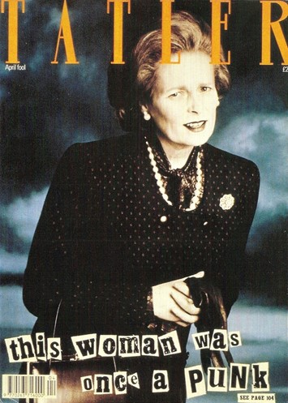

In April 1989, Westwood appeared on the cover of Tatler dressed as Prime Minister Margaret Thatcher. The suit that Westwood wore had been ordered for Thatcher but not yet delivered.[66] The cover, which bore the caption "This woman was once a punk", was included in The Guardian list of the best ever UK magazine covers.

Westwood at the Life Ball in Vienna in 2011 The next year, she cut off her hair to highlight the dangers of climate change.[71] She also appeared in a PETA ad campaign to promote World Water Day and vegetarianism, drawing attention to the meat industry's water consumption.[72]